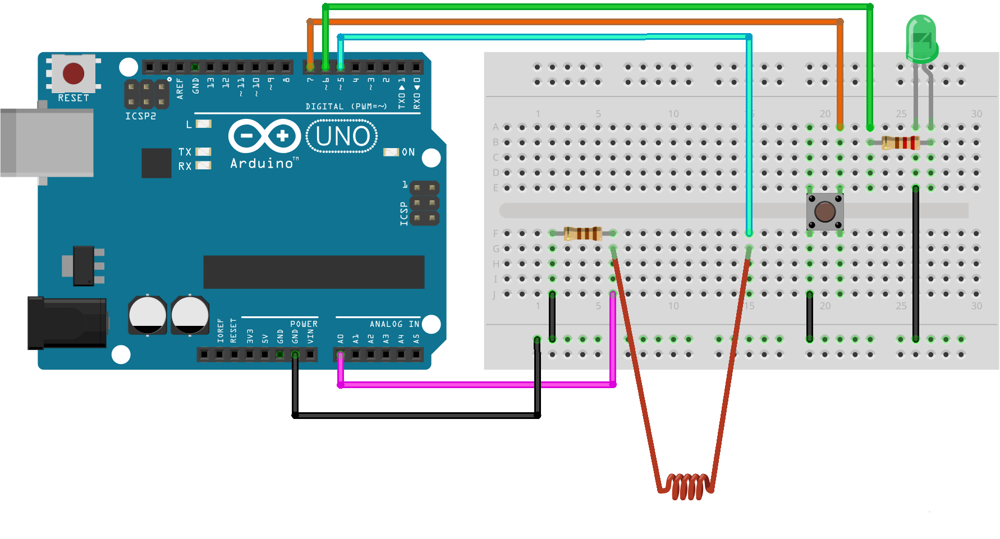
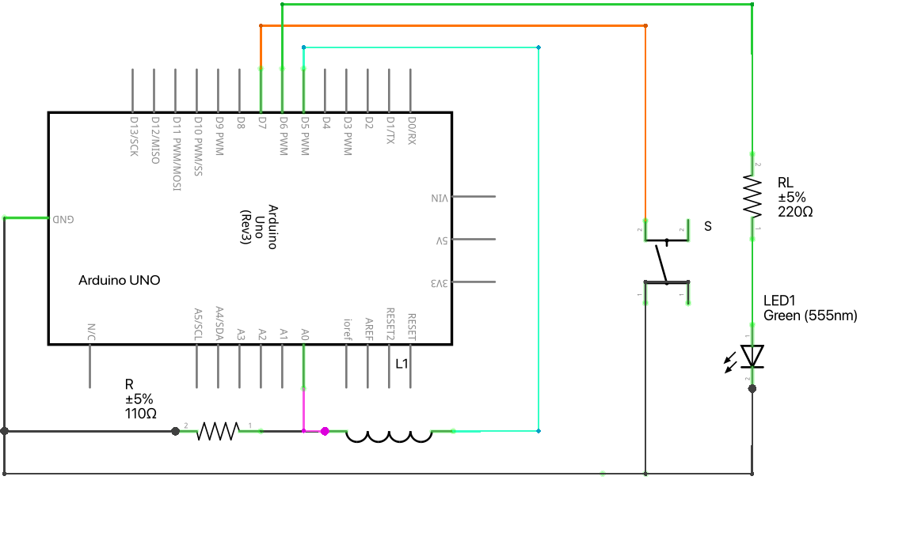

Weak Electrical Signal Measurement System
Based on Optical Lever Amplification
Addressing the challenges of low amplitude, noise susceptibility, and difficulty in direct measurement of weak electrical signals, this system employs a multi-stage conversion chain — "electrical signal → mechanical deflection → optical displacement → digital output" — to achieve indirect detection and quantitative analysis of weak electrical signals.
To address the problems of low amplitude, noise susceptibility, and difficulty in direct measurement of weak electrical signals, this paper designs a weak electrical signal measurement system based on optical lever conversion and amplification. The system receives weak electromagnetic signals through a receiving coil and converts induced current variations into mechanical deflection responses through electromagnetic interaction. Combined with an optical lever structure and a PSD sensor, the system realizes optical amplification and detection of small angular displacements. Signal conditioning, analog-to-digital conversion, embedded data processing, and a calibration module are employed to establish the relationship between input current and PSD output. The system structure, operating principle, and error sources are analyzed, and an experimental verification scheme is proposed.
Keywords: Weak Electrical Signal; Optical Lever; Magnetoelectric Conversion; PSD Sensor; Embedded Data Processing
§2 System Overall Design
Modular architecture and multi-stage conversion chain
The system uses a rectangular frame as the overall mechanical support structure, adopting a modular design approach that divides the entire apparatus into four functional modules. The frame's longitudinal direction serves as the primary path for signal conversion and optical detection: the left side houses the suspended deflection structure, while the right side accommodates laser emission, spot position detection, and data processing circuitry. The signal receiving module and deflection module employ an integrated coil structure wound from a single continuous copper wire. The weak signal generation module is located externally to produce controllable weak signals. To mitigate environmental interference, the entire apparatus incorporates electromagnetic shielding, with the data processing section isolated by a metal shielding enclosure.
Computer audio modulation
Electromagnetic induction
Optical lever amplification
Digital acquisition & computation
System Conversion Chain
Electrical → Mechanical → Optical → Digital
§3 Weak Signal Generation Module
Stable and controllable test signal source
Circuit Design & Implementation
Computer audio modulation + Si4713 RF transmission
The weak signal generation module consists of a computer audio output interface, an Arduino control unit, and a Si4713 RF transmitter chip. The computer generates low-frequency modulation signals with controllable amplitude and frequency, fed into the Si4713's LIN and RIN audio inputs via a 3.5mm audio jack. The Arduino initializes and configures the Si4713 through the I2C communication interface. The Si4713 integrates frequency synthesis, modulation control, and RF output functions, modulating the input audio signal onto a specified RF carrier and transmitting it through an antenna.


Program Design & Implementation
Signal generation and RF transmission control
The low-frequency modulation signal is generated by the computer audio output (a Python script generates the sine wave), while the Arduino handles communication and control with the Si4713. The program initializes the Si4713 via the I2C bus, sets the RF output power using setTXpower(), and configures the carrier frequency via radio.tuneFM(). Compared to traditional digital waveform generation, this approach leverages the computer's audio output for high-stability low-frequency modulation signal generation, combined with Si4713 RF modulation and transmission, improving control precision over input signal frequency and amplitude.
100Hz Sine Wave Generator
script.pyPython audio output script using the sounddevice library to generate a 100Hz sinusoidal modulation signal
Generation Module Program
signal.inoArduino program for Si4713 initialization, parameter configuration, and operational state control with error handling and serial status reporting
§4 Signal Receiving Module
First conversion: field signal to current signal
The signal receiving module adopts a lightweight, movable structural design, consisting primarily of a receiving coil and permanent magnets that establish a stable magnetic field. The receiving coil uses a multi-turn winding structure to increase the induced electromotive force when the alternating magnetic field changes. NdFeB magnets with opposing poles are arranged on both sides of the coil, creating a directionally stable magnetic field environment in the coil region.
When an external weak alternating current signal propagates through space creating a changing magnetic field, the magnetic flux through the receiving coil varies with time. According to Faraday's law of electromagnetic induction, an induced electromotive force is generated, which in turn produces an induced current. This current is transmitted through a closed loop to the deflection coil, providing the driving current for the subsequent magnetoelectric conversion process.
The receiving coil and deflection coil are directly connected (integrated coil structure), reducing signal loss and additional interference during transmission. This avoids the impact of contact resistance and connection stability issues inherent in traditional separated connections, thereby improving the overall system sensitivity.
§5 Deflection Module
Core of physical signal amplification
The deflection module is the core component for achieving physical amplification of weak signals. It consists of a suspended deflection coil, permanent magnets, a reflector, and a mechanical support structure. The deflection coil is suspended from the frame by two fine copper wires connected to the receiving coil, with NdFeB magnets arranged on both sides. A reflector is fixed to the deflection coil and rotates synchronously with it. A collimated laser beam from the right side strikes the reflector and is reflected back onto a one-dimensional Position Sensitive Detector (PSD) on the right.
When the induced current I flows through the deflection coil, the current-carrying coil experiences an Ampere force in the constant magnetic field B produced by the magnets, generating a rotational torque. The suspension wire simultaneously produces a restoring torque. When the Ampere torque and restoring torque reach equilibrium, the system achieves a stable deflection state. According to the law of reflection, the reflector produces an angular deflection of 2θ in the reflected laser, which travels a distance D before reaching the PSD sensing surface.
Under small-angle deflection conditions (θ ≤ 5°), the reflected spot position and the deflection coil current satisfy an approximately linear relationship. The deflection module converts weak current signals into observable optical position signals, providing the basis for subsequent detection and quantification by the data processing module.
§6 Data Processing Module
Optical signal detection, data conversion, and measurement output
6.1 Calculation Principles
Normalized Position Operator P — The PSD uses a dual-output structure; the two output signals are Ia and Ib. To eliminate the effects of laser power fluctuations, ambient light variations, and device gain differences, a normalization operator is introduced:
Within the system's operating range, the normalization operator P and the induced current I satisfy an approximately linear relationship:
where C is the conversion coefficient and b is the system zero-offset correction term, obtained through calibration experiments.
Signal Frequency f — By continuously acquiring PSD output signals and analyzing the time-varying waveform of the normalization operator, the period is determined using zero-crossing detection:
EMF Amplitude U — The receiving coil and deflection coil are connected in series. The system equivalent impedance is determined by the coil resistance and inductance parameters, measured using an LCR digital bridge:
6.2 Circuit Design & Implementation
PSD + AD8628 signal conditioning + ADS1115 precision sampling + Arduino
The data processing module consists of a PSD sensor, AD8628 signal conditioning circuit, ADS1115 ADC module, and an Arduino control unit. The PSD utilizes the lateral photoelectric effect to generate two differential photocurrent output signals based on the energy distribution of the light spot on the sensing area. The AD8628 forms a transimpedance amplifier for current-to-voltage conversion (featuring low input bias current and low offset voltage). The ADS1115 performs 16-bit high-precision analog-to-digital conversion and communicates with the Arduino via the I2C interface.


6.3 Program Design & Implementation
Data acquisition, normalization, digital filtering, and parameter conversion
The program adopts a modular design, including ambient light compensation, data conversion, moving average filtering, and result output. Ambient light compensation reduces the effect of background light on the PSD output. The moving average filter denoises the normalized position operator, reducing the impact of random noise on measurement results. The filtered data is used for computing spot position, current, voltage, and frequency parameters.
Measurement Module Program
measure.inoArduino program for data acquisition, ambient light compensation, moving average filtering, zero-crossing frequency detection, and parameter conversion output
§7 System Calibration & Quantitative Model
Establishing the quantitative conversion relationship between input current and PSD output
7.1 Calibration Principle
To obtain accurate input values for system calibration, a precision sense resistor of known resistance is connected in series with the deflection coil loop. The actual coil current is obtained by measuring the voltage across the sense resistor: I = VR / Rs. During calibration, the Arduino outputs PWM drive signals at different duty cycles, progressively varying the deflection coil current. Multiple (Ii, Pi) data pairs are collected, and the conversion coefficient C and system zero-offset b are determined through least-squares fitting.
7.2 Calibration Module Circuit
Current output section + conversion coefficient computation section
The calibration module consists of a current output section and a conversion coefficient computation section. The current output section supplies controllable and measurable standard input current to the coil. The computation section reuses the same data processing hardware as the actual measurement process (PSD + AD8628 + ADS1115 + Arduino), requiring only a program switch on the Arduino to toggle between calibration and measurement modes — ensuring identical signal transmission paths between calibration and measurement.


Calibration Current Output Program
current.inoArduino program for seven-level PWM brightness control, pushbutton gear switching, and sense resistor current measurement
Calibration Coefficient Computation Program
calibrate.inoArduino program for ADS1115 dual-channel acquisition, stepped PWM calibration, and least-squares fitting with automatic recommended calibration output
§8 Error Analysis
Error sources, uncertainty evaluation, and accuracy improvement strategies
Error Sources
- Magnetic field non-uniformity: non-ideal spatial distribution of the permanent magnet field affects the Ampere force vs. deflection angle relationship
- Mechanical structure errors: suspension wire material properties and mounting conditions affect equivalent torsional stiffness; small variations in reflector angle and laser incidence direction are optically amplified
- Analog circuit errors: op-amp input offset voltage, bias current, temperature drift; feedback component parameter variations
- ADC quantization error: reference voltage fluctuations and sampling noise limit system resolution
- Environmental interference: external EMI coupling through space or power lines; temperature-induced long-term drift
Uncertainty Evaluation Model
- Type A uncertainty: statistical analysis of repeated measurements, reflecting random factors such as air turbulence, mechanical micro-vibrations, and circuit random noise
- Type B uncertainty: evaluation based on instrument precision and system parameter calibration errors, including ADC accuracy, amplifier parameter errors, and conversion coefficient uncertainty
- Combined standard uncertainty: synthesis of independent error components according to error propagation laws
- Expanded uncertainty: introducing a coverage factor to express the error range at a given confidence level
Accuracy Improvement Strategies
Hardware: improve mechanical stability (wind shielding, optimized support, enhanced shielding); optimize magnet-coil relative positioning for a more uniform magnetic field; shorten analog signal transmission paths. Software: moving average filtering, outlier removal, appropriate sampling parameter selection. Procedures: establish standardized calibration workflows, perform optical path alignment and zero-point calibration before experiments, and periodically verify system baseline states.
§9 Application Cases & Effect Analysis
Verifying system detection capability through typical experimental scenarios
Photoelectric Effect Experiment
Connect the photocell output to the system input, allowing weak photocurrent to flow through the receiving and deflection structure. While maintaining constant incident light frequency, vary the light intensity, record spot position changes, and compute corresponding current values to verify the system's photocurrent detection capability.
Weak Photoelectric Signal Detection
Using an adjustable light source to generate signals of varying intensity, gradually reduce the input signal strength, record PSD output position changes, and determine the system's effective detection limit under current conditions. Long-duration zero-input data acquisition is also performed to analyze zero-point drift and background noise levels.
Material Photoelectric Property Testing
Place the material under test beneath a stable light source to generate photocurrent, which is fed into the measurement system. By detecting spot position changes, quantitative comparison of output currents from different materials is achieved, enabling analysis of response intensity, stability, and variation patterns.
§10–11 Limitations & Outlook
System boundary awareness and future optimization directions
System Limitations
- Sensitivity vs. response speed trade-off: reducing mechanical stiffness to increase sensitivity compromises dynamic response range
- Limited linear range: excessive input signals cause the light spot to exceed the PSD effective detection area
- Frequency response constraints: mechanical inertia limits the system primarily to low-frequency or quasi-static weak signal detection
- Environmental sensitivity: relies on controlled laboratory conditions; air currents, vibrations, and temperature variations cause perturbations
- Optical path recalibration required: device relocation or reassembly necessitates optical realignment
Future Outlook
- Structural optimization: improve suspension wire materials, reduce moving-part mass, refine damping design; add vibration and wind shielding
- Magnetic field optimization: improve field uniformity in the working region for better current–response linearity
- Signal processing upgrade: adopt higher-performance embedded platforms with advanced digital filtering and auto-calibration algorithms
- Analog front-end optimization: reduce amplifier noise, temperature drift, and ADC error
- Application expansion: multi-channel receiving structures, higher-performance sensors, extending to low-light detection and weak electromagnetic environment analysis
Project Files
All design documents, circuit projects, program code, and experimental resources
Complete Paper
doc.pdf (1.5 MB)Full 32-page paper on the weak electrical signal measurement system based on optical lever amplification
Generation Module Circuit
发生模块电路文件.fzzFritzing project file — Si4713 RF transmitter module circuit schematic and wiring design
Data Conversion Module Circuit
数据转换模块电路文件.fzzFritzing project file — PSD + AD8628 + ADS1115 data processing circuit design
Calibration Module Circuit
标定模块电路文件.fzzFritzing project file — calibration module PWM drive and sense resistor current detection circuit
Generation Module Program
signal.inoArduino sketch — Si4713 initialization, configuration, and RF transmission control
Measurement Module Program
measure.inoArduino sketch — PSD data acquisition, ambient light compensation, digital filtering, and parameter computation
Current Source Program
current.inoArduino sketch — seven-level PWM brightness control and sense resistor current measurement
Calibration Module Program
calibrate.inoArduino sketch — stepped calibration sampling and least-squares fitting with automatic recommended calibration output
Signal Generation Script
script.pyPython script — generates a 100Hz sine wave modulation signal using the sounddevice library
Equipment List
实验器材表.xlsxExcel spreadsheet — complete equipment inventory with specifications and parameters